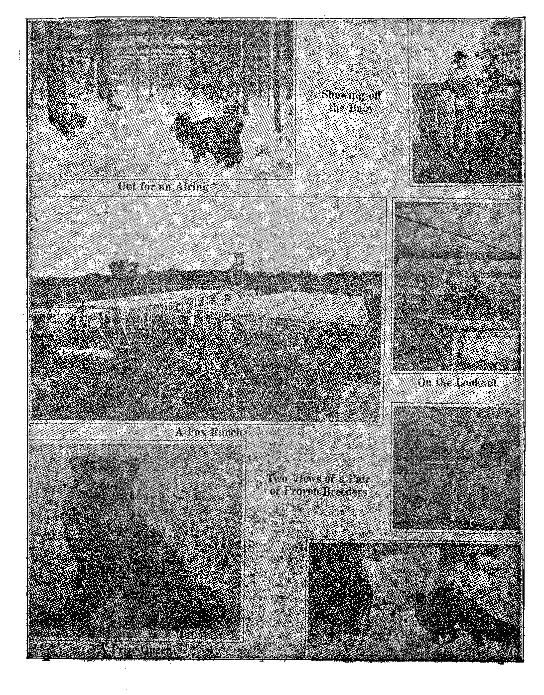

TRUTj
5$ a copy — $ 1-00 a .Year
Canada, andJpreignTountriea $, 150
Vol. VI Bi-Weekly No. 152
July 15, 1925
OLD WORLD ' DYING
NEV
WORLD BEGINNING
—......-.......-....... :::■;■/■ la)
Social and Educational^
Bits of World News .................. 647
>• The Problem of Child Management
Tom Paine of New Rochelle ................ 647
A Unique Use of German Mails ............. 649
Ocean Currents are Changing .............. 650
In Defense of Monkeys ................ 655
Labor and Economics
Protecting the Skunks ................ 643
What Child Labor Really Is . . . • . . . . . . . . . . . 644
Child Labor ..................... 646
A World-Wide Cry; “Wanted—Men ' ........... 656
; Finance—Commerce—Transportation
Losses on Merchant Marine .............. 647
Guggenheimers Have to Dig Up .............. 649
Silver-Black. Fox Farming ................. 651
Political—Domestic and Foreign Quiet Reigns in Mexico ................ 648 Morocco Refuses to Stay Carved ............. 649 Progress in Mexico .................. 650 What a Well-Known Man Said ............. 661
Science and Invention
Criticisms are Acceptable ............... 657
Fishes Will Stand Freezing .............. 65S
An Unscientific (?) Scientist ............. 659
Religion and Philosophy
Scientists Belittled for Honoring God
“The Sign of Fibe” .................. 660
The Rewards fob Observing Holy Year
The World’s Prayer to Its Idol .............. 662
The Kingdom of Heaven is At Hand ...
The End of the World ................ 665
The Anglo-Catholic High Chubch Hell .......... 670
Published every other Wednesday at 18 Concord Street, Brooklyn, N. Y„ U. S. A., by WOODWORTH, HUDGINGS & MARTIN
Copartners and Proprietors Address: 18 Concord Street, Brooklyn, N.Y., V. S- A..
CLAYTON J. WOODWORTH . . . Editor ROBERT J. MARTIN . Business Manager WM. F. HUDGINGS . . Sec’y and Treas.
Five Cents a Copy—$1.00 A Year Make Remittances to THE GOLDEN AGD
Foreign Offices : British.....34 Craven Terrace, Lancaster Gate, London W. 2>
Canadian....... . . , 88-40 Irwin Avenue, Toronto, Ontario
Australasian . . « . a . . 495 Collins Street, Melbourne, Australia South African ...... fl Leila Street, Cape Town, South Africa
Sintered as second-class matter at Brooklyn, N. Y., under the Act of March 3, 1878
Volume VI
Brooklyn, N.Y., Wednesday, July 15, 1925
Number 152
VERY forcefully the Knoxville Plain Dealer says: “Do you know that most states have laws for the protection of fish, calves, lambs, colts, deer, rabbits, quail, ducks, mud hens, musk rats, skunks and buzzards; and that all these laws are constitutional1? The only law for the protection of animals that wTas ever declared unconsitutional is the child labor law. Oh, baby dear, don’t you wish you were a cute little skunk ?”
Another writer bitterly calls attention to the horrors of human sacrifice as practised in parts of India. He well says that we enlightened Westerners would not be willing to let our children be sacrificed to any false god, but only to the almighty dollar. Profits are not false gods in the eyes of many so-called Americans.
Still another writer points out that the Government can and does seize and destroy live stock to prevent the spread of disease; but when the stunting of its future citizens is at stake it suddenly finds itself helpless. If there is anything more strictly national than a citizen of the United States, will somebody point out what it is?
The history of national child labor legislation in the United States is very sad. In September, 1916, Congress passed a bill prohibiting interstate commerce in the products of child labor. Twenty-one months later the Supreme Court declared the bill unconstitutional.
In February, 1919, Congress passed a bill imposing a tax of ten percent on the products of child labor. After the lapse of thirty-nine months the Supreme Court ruled that this act also is unconstitutional. It then became evident that the Constitution would have to be amended.
A year ago Congress adopted an amendment calling for national power to limit, regulate and prohibit the labor of persons under eighteen years of age; but powerful propaganda began to immediately make its appearance against the amendment. The very forces that had previously sought to have the acts of Congress voided now sought to prevent the adoption of the amendment.
EFORE an amendment can be made to the Constitution three-fourths of the states must signify their assent. As soon as the state legislatures began to consider the subject, the Farmers’ State Rights League, Inc., of Troy, N. C., began to flood the papers with half-page advertisements denouncing the amendment. An investigation disclosed that the Farmers’ States Rights League, Inc., is in reality a league of southern cotton-mill owners masquerading under a deceptive name. But the scheme worked, and the amendment was defeated.
In the Catholic State of Massachusetts Cardinal O’Connell vehemently denounced the amendment; and by his order his denunciation was read before the altar in every Catholic church in Massachusetts at three services on each of three consecutive Sundays before the vote. The Roman Catholic church does not want any official inspection of the laundry system run under the name of Houses of the Good Shepherd, where the conditions are well known to be virtual penal servitude and slavery, twelve to fourteen hours per day.
Big business got on the job, too, declaring the proposed amendment to the constitution to be Bolshevism, Socialism. The press was used to scare farmers into thinking that, if Congress had its way, neither boys nor girls would be allowed to work in their own homes or on their fathers’ farms. Of course these statements were all lies, but the scheme worked, and the amendment was defeated. The skunks are protected; the children are not.
To the everlasting credit of President Coolidge be it said that he was not on the skunk
Side of this question. By speeches in public on three different occasions he stated his endorsement of the amendment. He knew, what all may know if they will, that child labor does not mean selling newspapers after school nor working a few hours on holidays, but an unremitting grind, day after day, without school, with- ■■ out play, with mind and body stunted, and morals too, while the men and women that should do the work cannot get it, because the wages are not enough to support them.
What Child Labor Really Is
INCE the Supreme Court in 1922 declared the last child labor law unconstitutional the thirst for profits has led to a great increase in the number of little folks that are compelled to slave throughout the day at tasks set for them by their greedy or needy parents or .caretakers.
A writer in “Colliers” reporting on an investigation which he made in the year 1923 said in part:
“Among the families investigated in this effort were found a great many eases of pneumonia and influenza,, mumps, typhoid fever, measles, whooping cough, bronchitis, tonsilitis, diptheria, eczema, coughs, tuberculosis and syphilis, all of which had been declared communicable and dangerous to public health by the State Health Board. . . .We know that these children made spectators at court weep when they were brought in to testify. . ., . There is one family, for instance, the children of which were told not to come to school until they were cleaned up of filth and vermin and disease. They did not go back. They stayed at home to work on milk tags and clothing.”
A reporter in the New York 'American testified on January 11, 1924: “In one crowded tenement room I found a baby, not more than eighteen or nineteen months old, sitting on its grandmother’s lap, and stringing tags.” The New York Times in. December of the same year unconsciously pictures the great financiers of New York as approving matters of this kind when it says: “By an overwhelming vote the Chamber of Commerce bf the State of New York, at its monthly meeting yesterday, went on record as opposing the child labor amendment to the Constitution of the United States.”
Perhaps we do not get the right slant on this; but as we see it, the Chamber of Commerce of the State of New York is deadly opposed to taking away from any eighteen-months-old infant its constitutional right to work say
BnooKLYN, N. Y.
twelve hours a day seven days in a week. Later the child might learn to play golf , if it survived; and golf would be unconstitutional for such children. Lets stick to the Constitution, no matter what happens to the kids! But golf is constitutional for members of the Chamber ofi Commerce.
Conditions in Philadelphia '
HILADELPHIA is particular about keeping the children in school. An investigation carried on by the Child Labor Association of Pennsylvania and the school authorities, in the spring of 1923, brought to light 217 children in two public schools in that city who do sweatshop work at home from seven to eight-thirty in the morning, at noon, and from four to ten at night, many of them getting in a full eighthour day besides going to school. On Saturdays and Sundays they work twelve to fourteen hours a day.
We have not heard of the official attitude of the Philadelphia Chamber of Commerce on these conditions; but we presume the theory is that by working the kids eight hours a day when not in school they are kept out of mischief and away from the golf fields; and by letting them go to school they become patriotic so that they will want these conditions continued indefinitely.
Incidently, the child workers frequently go to sleep in school, which is nature’s way of trying to make up for man’s inhumanity to man without violating the Constitution. Also, many of the little girls who work at night, stringing beads for the gowns worn by ladies whose husbands play golf, have permanently injured their eyesight.
Some of the items which come from Philadelphia, Providence, and other industrial centers are that little girls under eight embroider night dresses at twelve cents per dozen, with a deduction of two cents for loss. For putting hooks and eyes on rods they receive thirty cents for each 100 rods. For June roses they get twenty cents a gross. In Rhode Island they do 100 different kinds of work, all Constitutional.
SURVEY made by the state boards of health and education of California, one of the richest states of the Union, reveals the fact that there are 15,000 children under work-
ing age who leave school early in the Spring and work until late Fall, gathering fruits and other crops in that state. These little folks, some of them mere babies, follow their parents all over the state, winding up the season in the hot “sunkist” cotton fields of Imperial Valley. Last November in Imperial Valley a score of cotton growers were arrested for employing child labor, some of the tots only six years of age. California is strong for the Constitution.
It ■ is now nearly two years since the beet sugar exposures; but conditions are as bad as ever. At that time it was disclosed that the cultivation of sugar beets lends itself peculiarly to the exploitation of child labor. The little folks are in the fields at six in the morning, and work until as late as eight at night, with the shortest possible resting time in between. Up and down the rows they crawl, weeding and thinning out the plants, their wrists swollen and lame, their hands and knees sore and cracked, their necks sore and stiff. In harvest time the constant stooping to pull the five-pound to twenty-pound beets out of the ground is almost back-breaking.
The beet sugar workers occupy only the roughest kind of temporary shelters; such as abandoned farm houses, tar-papered shacks, portable cottages, tents and caravan wagons. Overcrowding to the limit is the rule. All the family works. A mother beet-worker testified that her baby had worked ever since he could lift a beet. This is Constitutional, exceedingly so.
Schools in the beet districts have a custom of granting ‘beet vacation’ in the Fall, to augment the supply of available child labor. Senator Reed Smoot is said to have declared that the use of child labor in the beet fields of Colorado is a Godsend to the children, as it gives them something to do instead of running the streets.
11IBTEEN states have laws which are on a par with the child labor laws, which were declared unconstitutional. Twenty-three states alloAV children under fourteen years of age to work. Thirty-seven states allow children to go to work without a common school education.
One out of twelve American children, and in some states one out of four, is a child laborer. Mississippi sanctions work for boys of twelve. ■Georgia’s law permits girls of fourteen to work all night. In North Carolina the hours of labor of convicts in the state prisons are limited to nine, but boys and girls may and do work in the mills for ten and eleven hours.
A report from Texas, in 1923, told of a five-year-old who picked a bale of cotton during the season, and of another five-year-old who picked seventy-two pounds of cotton between sunrise and sunset on October 27th, and had very ‘sorry’ cotton to pick in.
One of the worst of all places for child workers is in the canning factories, where the canning of many articles of food injures the hands. In the shrimp canning business the little workers cannot work steadily longer than a week at a time. Their hands become raw, and they have to wait and give them a chance to heal.
To a gentleman who glanced into a shrimp canning factory the boss said: “Them kids ain’t old enough to work, and they think you’re an inspector. I taught them to run away when anybody that was strange came into the factory. But we haven’t got anything to be afraid of, though; because the Government hasn’t any more authority to make kids stop working. I’m glad they knocked out those federal child labor laws. They sure caused us canners a heap of bother while they were in force.”
Among international workers in the cause of child labor, the United States is classed with Oriental countries. This may not be very gratifying to American pride; but it must suit those New York Chamber of Commerce defenders of the Constitution or they would not fight so hard against the poor kids.
NDER the Mexican Constitution the maximum day’s work for children between twelve and sixteen years of age is six hours. The Government is opening both night and day schools for the development of child workers formerly driven to prolonged labor.
G reat Britain passed the first child labor law -in 1802. It forbade the employment of children in the woolen and cotton mills more than twelve hours a day. Prior to that it was not an uncommon practice for parents to sell their offspring as apprentices; and in the early years of the nineteenth century gangs of helpless little ones from six or seven years and upwards, were auc-tinned off, thousands at a time, to great factories where their lives were a ghastly slavery.
They received no wages; they were clothed in rags; their food was insufficient and of the coarsest kind; often they had to eat while standing at their work; they were driven to work twelve to sixteen hours; they had no holidays; their few hours for sleep were spent in filthy beds from which some other relay of little workers had just been roused; they had no schooling and no recreation, and lived amid the most shocking and brutal immorality. When one batch of such labor was used up, another was always ready. For these data we are indebted to the “Standard Reference Encyclopedia”.
Even as late as the World War the condition of labor in the British Isles was so inferior that it was difficult to recruit fair-sized men for the army. Some years ago the children used as chimney sweeps were deliberately starved in order that they might be small enough to go up and down the narrow flues. All that has been stopped. Labor conditions in China are now about as they were in England a hundred and twenty-five years ago.
In France the age limit is thirteen years as against fourteen in England. The time limit is ten hours, eight underground. Females may not work underground. Children may not labor between 9 p. m. and 5 a. m,
In Belgium the age limit is twelve years. The time limit is twelve hours, ten underground. Females under twenty-one may not work underground. Children may not labor between 9 p. in. and 5 a. m.
Norway, Denmark, Czechoslovakia, Netherlands, Greece, Bulgaria, Rumania and New Zealand fix the age limit at fourteen years.
In Germany the age limit is thirteen years. The time limit is six hours. Night work is forbidden. Parents may work their own children in their own factories or shops not to exceed three hours per day or during vacations four hours. In the coal districts boys fourteen years old may work underground seven hours.
In Austria the age limit is twelve years. The time limit is eight hours. Night work between 8 p. m. and 5 a. m. is forbidden to women and children.
In Switzerland the .age limit is fourteen years, and the time limit is eleven hours for all persons. Persons under sixteen years of age may not work in dangerous places or at dangerous occupations. Women and children may not work after 8 p. m. or on Sundays.
In Italy the age limit is twelve years, and the time limit eleven hours. No female may work underground. The Minister of Agriculture may issue permits to children to work twelve hours in the planting and in harvest seasons.
HILD labor does not mean selling newspapers after school, nor working a few hours on holidays. It means toiling long hours at machines in factories, slaving in fields, excessive tasks at low wages. It means , also no time for school, play, or healthy growth.
Every state now has full power to make its own laws regarding child labor. There are good laws and bad ones, and five states with no restrictions at all. All children need protection; but the children of those five states need it most of all.
The 1920 census said that 1, 060,958 children are working. But this counts only those from ten to fifteen years old. Thousands of children less than ten years old are at work. Children less than six years old, working all day long,
By Alice Parle
are discovered from time to time by investigators of the National Child Labor Committee.
At the same time, while more than a million children are working, far more than a million men and women are unemployed. Setting the children free would be good for the children, and it would also give jobs to men and women who are now idle. ,
Even the people who live in states which have good laws against child labor, and which enforce the laws they have, use goods produced in all the states. So all people in all the states are using articles produced in part by child labor.
All honor to the states which have set' a high standard in protecting their children from child labor. It is time now for the nation to act and to protect all the children.
[Radiocast, with other items, from Watchtower WBBR ona wave length of 2T2.6 meters, by the Editor]
ff:
Justice Stone of the Supreme Court of the
United States, in an address before the American Law Institute, made the statement that “The United States is the least law-abiding nation of the civilized world” and that “The country’s disrespect for law menaces its future.” At the same session Attorney General Sargent deplored the marked disrespect for law among the wealthy. How unwise are such. In a general breakup of law and order the wealthy would be the chief losers. They should be the bulwarks of impartial law enforcement.
Miss Sara Coggin, fifty years a teacher in Brooklyn’s public school No. 12, reports that an alarming change in the men tai and moral attitude of the children has come about in recent years. Fifty years ago they were uniformly re-• spectful to teachers and parents and their elders generally; now they have respect for no one. She advocates a return to the use of the switch.
Mbs. Realty Sloan of Ethyl, West Va., is 104 years of age. Her daughter Mrs. Parlee Hicks is 84, her granddaughter Mrs. Realty Phalin is 55; her great granddaughter, Mrs. . Mellie Irwin is 39; her great-great granddaughter, Mrs. Pearl Irwin, is 19 and her greatgreat-great grandson, Teddy Irwin, is two years of age. These six recently had their pictures taken together; 394 other descendants, however, were crowded out. Mrs. Sloan looks as robust as any of the party and may be one of the millions now living who will never die. They all look like nice sensible people well worth knowing.
THE losses on the United States merchant marine during the last fiscal year were $36,739,000. The Shipping Board made an effort to maintain and operate 387 ships, which represents about one-third of the tonnage under its control. The total tonnage of the world is one-third greater than in 1914, while world trade is only about the same amount. Two-thirds of the idle, tonnage of the world is under the United States flag. . .
Twentieth Century Beaten by Motor Boat
THE famous crack train of the New York
Central Railroad, the Twentieth Century Limited, was beaten by thirty-eight minutes by a motor boat, in its run from Albany to New York. Moreover, the motor boat crew operated under the disadvantage of two shifts, caused by a breakdown. The journey was finished in the boat in which it was begun, but for three-quarters of an hour a different and speedier boat was used. It is believed that the speedier boat could have made the trip, if it had not sustained an accident, in thirty minutes less time.
IT WILL be good newrs to millions of American travelers to learn that Chicago’s new union station is completed. This terminal, construction of which was begun in 1914, has cost $75,000,000.
REGULAR airplane service has been opened between Dayton and Cincinnati, Ohio. These cities, which are 59 miles apart by rail, will be 'within 45 minutes of each other by air. Five trips each way will be made daily. Th® charge for the round trip is $25.
THE outstanding fire insurance in the United
States is estimated at close to one hundred billion dollars. The number of persons employed in the general and local insurance offices is about 750,000. The fire losses average about a half billion dollars a year, running somewhat over that amount for the first half of 1925. The annual loss of human life in fires is set at over 15,000.
' Tom Paine of New Rochelle
THE New York American points out that Tom Paine, whose memory is now being honored j by New Rochelle, was the first to definitely pro- pose actual independence for the United States, > the first to propose the Federal Union of States, f besides which he first advocated the abolition of [ slavery, granting of old age pensions, international copyright and other great reforms.
64T
TpOR a sum said to be more than $15,000,000 the Park and Tilford Company, dealers in candy and other good things to eat, have bought the Overholt Distillery at Pittsburgh, formerly owned by H. ’C. Frick, Andrew W. Mellon, Secretary of the Treasury, and another party. The 1,800,000 gallons of whiskey involved are to be sold to the sick; at least that is the plan.
T? AGING a mob of five thousand persons bent -*• on lynching two negro prisoners indicted for criminal assualt and murder, seventy-five brave officers of the law succeeded completely in their task of defending the Dallas County Jail, and the law may now take its course. Five citizens were wounded and one hundred jailed before the riot was quelled.
TN THE Medical convention at Atlantic City the doctors set forth that Americans have 100,000,000 colds a year, one for each of us. It is surprising to know that the number is so small. But it can be reduced to almost nothing by keeping the windows open day and night and by avoiding the use of white bread. Cut out white bread, breathe' fresh air, and use plenty of fruits and vegetables, and colds will cease.
TWENTY years ago one child out of seven died before becoming one year of age; now, so greatly have conditions improved, that only one child in twelve dies before reaching one year of age. Improved sanitation, better knowledge of foods, more attention to ventilation and-cleanliness; all these are producing results^ with still better things ahead. ■
THE United States maintains, in connection with its biological bureau, a force of skilled hunters who make it their business to find and destroy by rifle or poison, animals such as wolves, mountain lions, bears, bobcats, lynxes and coyotes which prey upon domestic and other useful animals. There are 412 men in the force. In the nine years in which they have been employed in this work they are estimated to have saved $72,000,000 worth of crops.
TpRNEST King, Jr., eleven years old, of Winona,
Minn., is just back with his parents from a hunting trip to the wilds of Africa. The Kings, all of them experts with the rifle, brought back four hundred cases of big game specimens, the largest of which, a rhinoceros, was brought down by the youngest of the party. Various museums will get the specimens.
HP HE safest places in the United States are apparently Concord, N. H., Lawrence, Newton and Malden, Mass. No murders occurred last year in any of these cities. The most dangerous cities were St. Louis, Chicago, Cincinnati and Pittsburgh, in the order named.
ONE-THIRD of America’s trade with the Orient is with Japan; the trade with China is less than half that amount; the trade with India, the Philippines and Australia is, in each instance, about one-fourth the trade with Japan. The total trade of America with the Orient is about two billion dollars a year.
NOT for fifteen years have there been such favorable conditions in Mexico as now prevail there. The present Mexican Government is strong. It has the confidence of the people. They know that it is fearlessly working for their interests. The present Government dominates and overpowers the clerical situation completely. The political influence of the Roman Catholic church in the United States is now being used powerfully against Mexico.
A DES MOINES glove manufacturer, being -U*- on a trip around the world with his nineteen year old son, and chancing to learn that the King of England was at the great Wembley exposition the same day as himself, pushed his way past all barriers, thrust out his hand and said, “How do, king, shake hands with America.” The king showed that he was human by laughing heartily and grasping the profferred hand. Incidentally he shook hands with the son. The attendants and flunkeys are slowly convalescing from the shock, but the British press is still angry. 3
OF ALL the civilized countries in the world Great Britain and the United States are the only ones that have not legally adopted the metric system for general use. In the United States the metric* system is in official use, the meter of 39 37 inches being our official standard of length, but the general public clings to the old illogical measures. '
BC. Forbes, in the New York American, says • that ‘‘When our money kings visit Europe the doors of royal palaces swing wide open for them. Crowned kings do obeisance to the most powerful of these money monarchs. American ambassadors are at their beck and call. European Prime Ministers metaphorically fall at their feet and offer them adulation.”
AMERICANS visiting Europe this season are making a hit with what is now commonly known as jazz baggage, i. e., baggage which is painted with stripes or spots, and in all the colors of the rainbow. The claim is that the freak painting helps to identify the baggage. Probably it helps to sell it, too. Jazz dresses are also making their appearance.
A ROCHESTER, N. Y., girl conceived the apparently sensible idea of visiting Europe and working as a stenographer for various American firms while there, so as to pay her way. But as soon as the British immigration officials at Southampton learned her intentions they refused her permission to land; and when she got to Hamburg and told the same story the officials locked her in her cabin. She had $100 in cash. She has returned to this country a sadder and wiser girl. All that she saw of Europe was through the porthole of her cabin.
THE Postoffice Department of Germany will undertake the experiment of accepting unaddressed mail. That is to say, a firm may send out advertising matter simply addressed “For Lawyers” and it will be delivered only to lawyers; “for housewives” and it will go to the housewives.
IT WAS more or less difficult for the diplomats of Britain, Spain and France to decide just how they would divide the rich country of Morocco between them, but satisfactory plans for the division of the plunder were finally agreed upon. The only drawback is that the Moroccan people are unwilling to agree to the government of their lands by outsiders. Having chased the Spanish almost into the Mediterranean the Moors are now making it interesting for the French, who have already lost several thousand troops.
rpjIE New York Times reports that the Russian crown jewels are still intact. They consist of the crowns of rulers for many generations, scepters, necklaces, headdresses, and even a miniature railroad train, all made of the most expensive jewels, and with extraordinary skill. The collection, worth $50,000,000, is being preserved by the Soviet as a sample of extrav-agence practised in the days of the Czars.
T) en-Yehuda’s dictionary of the Hebrew language, work on which was begun by Ben-Yehuda and his wife in 1877, is now virtually completed. Seven volumes of the work have been published; three more will be published in 1926. Ben-Yehuda died within an hour and a half from the time he had finished the manuscript. His widow, who colabored with him on the work throughout the whole 45 years, still survives, and was a passenger on the Zionist liner, President Arthur, on its second trip to the Holy Land. The great work completed is the acknowledged standard dictionary of the Hebrew tongue.
A FT ER twenty years litigation, in which a poor miner, George Campbell Carson, tried to get his due, the United States circuit court of appeals has decided that the American Smelting and Refining Company must pay him the sum of $20,000,000, profits which they have made out of Mr. Carson’s invention of treating copper ores, and for which they refused to compensate him. ..... .
RECENTLY I had a letter from my daughter who lives in old Mexico, and has lived there the last four years. She gave me some news items that you may think worth while. As she is in the government service I will withhold her name and address. She writes:
“There are several news items from Mexico that will be of interest to you. One is the land question, and the other is the weakening and breaking of the Catholic church.
“The agrarians are constantly and persistently taking over the land of the big estates, those belonging to Americans as well as to Spaniards or Mexicans. Of course it causes a great deal of friction, and the common people are often unreasonable in their demands.
“The Americans, of course, appeal to the Consulate, and the Consul writes to the local Mexican authorities and to the Department of State, and they bring the matter before the Mexican Federal authorities.
“In one instance the Mexican Government authorities ordered the local troops to go and put the trespassers off the land, but the troops refused to go.
“Lately there has arisen what they call ‘Sismatices’ (in English, a split) among the priesthood of the Catholic church. Some of the priests decided that they would quit sending money to Rome, while others remain loyal to the Pope. There is quite a bit of disturbance among the priests throughout Mexico over this question.
“In Mexico City the two factions were contending for the control of one of the largest churches of the city. So they finally appealed the case to President Calles; and he said he would settle it all right.: That both factions could Just get out, and the building should be used for a school. (I say three cheers for President Calles.)
“You know how the Catholic church has always maintained that only those marriages performed by the priest are legal and valid, claiming that the children of other people not married by the church were illegitimate. Well, now, the Government has turned the tables on them, declaring that only civil marriage is legal and valid. The children born of parents married only by Catholic priests or bishops must bear their mother's name, and are called Tiijos natural’ that is illegitimate, and the wife’s legal status is ‘soltera’ which in English means ‘single’.”
Now I say “hurrah” for the Mexican Government. Let us give them a good big pat on the back. They are certainly making great strides there towards a good' government, as well as towards religious liberty and common sense.
Dr. Montague Lomax, former physician of the
Prestwick, England, asylum for the insane, has recently been giving testimony before the Koval Commission on Lunacy, in which he denounces present asylum methods. He declares that British insane asylums seem to be run on the basis of keeping expenses down rather than efficiency up; that some of the medical superintendents are over eighty years of age and have been forty-five years in office; that patients are kept as workers after they have ceased to be certifiably insaneand that, worst of all, in the absence of the physician the attendants are frequently and unnecessarily cruel, and that if a patient reports the cruelty the offense is sure to be repeated against him personally and in a magnified form. Dr. Lomax said in part:
“What converted me into a lunacy reformer was this: The volume of complaints from all sources, their consistency, compelled me to believe in the existence of cruelty. It took me two years to convince myself.
“If you ask patients you will hardly find a case of a patient who has been in an asylum for any length of time who has not numberless cases of cruelty to relate.
“I have patients here now who will tell you of the most ghastly things that they have seen or that they have had done to themselves These things do exist. They exist beneath the surface, and until the public expresses its opinion in a note of horror and indignation they will go on existing. It is publicity alone that will stop all this sort of thing.”
TO THE oft repeated statement that the Gulf
Stream has changed and is throwing its heated waters more directly at the Arctic ice wall, comes now additional items that the Hum
boldt current off the northwest coast of South America is undergoing a change and that the Japan current is also affected. Manifestly the earth is preparing for the millennium.
G50
IL VER fox farming is a new and profitable ■ industry, although, its inception dates back to the year 1887, when Messrs. Dalton and Oul-ton began operations on Prince Edward Island, Canada.
’ Shortly afterwards .three sisters engaged in the business, and cleared $25,000 a year out of their venture. One fox pup brought $9,000; and twenty-five pelts sent to London were sold for $34,175. Some of the pelts were sold for from $2,500 to $2,700 each.
A real boom started. Michigan fell into line with Muskegon as the center of the fox-farming industry; there being no less than thirty-three silver fox farms in its immediate vicinity, and many more to northward along the Lake Michigan shore.
Not many really good fox skins are as yet placed in the markets, for the reason that the live foxes are worth much more for breeding purposes. A pair of good foxes will bring from $1,000 to $2,500, sometimes even more if they are prize winners; whereas a pelt brings $150 to $750.
Only the cull fox pelts are as yet put into the markets, or the pelts of undesirable foxes, such as a non-breeder or one that is somewhat offcolor or quality. ,
There are altogether eight grades of pelts in the color scheme of these foxes. Of these we might mention the red, pale silver, silver, dark silver, extra dark silver and jet black, all of which have a white tip brush (tail). The pelt of the black fox is less in demand because of its liability to imitation by dyeing. .
It is impossible to imitate the silver-black fox pelts; its guard hairs overlapping its fur have black ends with a silver ring next thereat, and that followed by black next to the skin, and interspersed with guard hairs that are jet black and from three to four inches in length. This, gives the pelt that beautiful and very desirable glossy silk sheen and high valuation. The underlying thick matted fur is very soft and fleecy, and is about an inch and a half in length and of a darker gray tinge.
In the early history of silver fox raising, breeding stock sold as high as $34,000 a pair, and individual pelts at $2,700. In 1922 there were upwards of 500 silver fox ranches with 15,000 foxes in captivity, representing an $8,000,000 investment.
The United States Department of Agriculture issued a Bulletin-—No. 1151—of sixty pages, exclusively devoted to fox farming, and taking up in considerable detail every phase of the industry. It is profusely illustrated.
Facts About Silver Foxes
THE first silver foxes sold for breeding pur-*- poses was in 1905; and until 1909 this industry was a monopoly. Since then millions of dollars have, been paid in fox dividends. Mr. Dalton retired a millionaire in 1912.
The fox can be tamed, but this is not desirable in fox farming. Foxes eat anything that a dog or a cat will eat. Meat, fish, bread, cereals, horsemeat, chickens, rabbits, eggs and milk are the chief foods; but mostly horsemeat in winter.
It costs about $12 a year to feed a fox for commercial purposes. They usually breed in February and March, and have but one litter a year of from one to ten pups, the average number being about four. The breeding period is from one to ten years, and the total annual increase is about one hundred percent.
The fox ranches can be built in groves, orchards, on hillsides or in the open, and must have plenty of sunlight. The prize foxes are inbred or line-bred. The best pelts are now worth from $300 to $750 each. Ninety percent of silver fox pelts going on the market today are ranch raised.
Up to date all silver fox pelts have been readily marketed, without any artificial demand being created through advertising. Perhaps not one person in a thousand has ever seen a genuine silver fox or even the' fur of one.
It is estimated that all the pelts of all the silver foxes in captivity in the United States, if placed on the New York market, would be absorbed within six months’ time.
The chief of the Biological Survey, U. S. Department of Agriculture, states that during the past ten years the meagre supply of fox fur has decreased only fifty percent.
In future all foxes registered must be inspected, scored, passed favorably upon and ear-tattood by an official of the National Fox-Breeders Association, and no fox scoring less than 80 points will be registered in the Herd Book of the Association; neither can its progeny be registered. This is intended to put the industry on a higher plane. Not over ten percent of cap-
five foxes will score over eighty-five points; so says Mr. J. E. Smith, Association secretary.
The combined silver fox industry in the United States and Canada is valued at over $20,000,000. Silver foxes are insurable up to three-fourths of their actual market value as breeders, C
HE writer had occasion to visit several fox farms, among them the large Silver-Black
Fox Farm, one and one-half miles north of Hart in western Michigan, and to study it and its environments.
The manager, Mr. Hancock, showed us all through the place, explaining in detail the characteristics of these beautiful little animals; and for oui’ close inspection he trapped a couple of them in a specially constructed wooden box trap. While he held them by the hind legs, they viciously bit at the cut-off trap slide. He parted the fur, and showed us the difference in quality.
All the woodwork of the pens, kennels and buildings is painted white. The pens are 15 x 45 x 7 feet size, covered with fox wire two-inch mesh, and have a carpet of wire fifteen inches underground to prevent the foxes from digging out.
The kennels are all staged sixteen inches above ground, allowing for snow depths, and are double boarded with tar building-paper between the walls and flooring. They are 2 x 2^ x 5 feet size,
A sloping roof on hinges makes it convenient to open for inspection and for airing and cleaning out. The nest boxes are set into this and can easily be removed. These nest boxes contain about two inches of sifted gravel to absorb the moisture at breeding time.
A wire cage 2i/2 x 2% x 5 feet with top and bottom solid is attached to the outer end of the chute and three feet from the kennel. The foxes pass through the door of the cage and through this chute, in going to and from the kennel. This cage serves several purposes: (1) Separating the foxes; (2) sunning the puppies; (3) closing up an excitable mother fox lest she carry the puppies out and bury them; and (4) giving them separate feeds, etc.
A tower thirty-five feet high is located in the center of the pen’s colony. During the breeding season this tower is occupied from 6 a. m. to 9 a. in. and from 3 p. m. to 6 p. m. by the keeper or his assistant without being seen by the ani- ‘ mals.
It is very necessary to watch and study carefully the actions of the foxes to be mated, and ' to note their habit and nature. If aware of be- ' ing observed, the foxes do not act naturally. ’’ A record is kept by this Mr. Lookout respecting the breeding time. This must be positively known and heeded.
The gestation period is fifty-one or fifty-two days, and the young are usually born in April and May. No one is allowed to go near the kennel in which are puppies. It excites the mother fox, and may mean the death of her litter.
The pens are thoroughly cleaned out daily. The animals are fed in soup bowls that are hung eighteen inches high on the wall netting; and these bowls are daily cleaned and sterilized just as thoroughly as the housewife cleans her table dishes.
The fox ranch of which we are particularly speaking contains one hundred silver-black foxes, many of which were prize winners at the Montreal Fox Exhibit. Among them the Lady Hilda, Island Queen, Canuck Rose, Jack Canuck, . and others of prize-winning note.
In feeding, some hide with the hair on must be given the foxes at intervals to remove internal worms, or the fox will chew off the tip of his tail, which is pure white two to four inches.
Round about the entire colony of fox pens and forty feet away from them, there is a ten-foot-high fox wire fence let one foot under ground, and overhanging two feet inwards to prevent foxes from escaping should one succeed in getting out of the pen, and to keep visitors far from the foxes at certain seasons of the year, especially during the breeding and whelping seasons, when visitors are not allowed to go near the fox pens, as it excites the females.
Only the keeper or caretaker is permitted to enter the pens; and even he must not go near the kennels in which there are puppies. The excitable mother will carry them out with a view to hiding them, and thus subject them to a cold; or she would smother them by burial in the earth of the pen.
This Corwin Fox Farm has several hundred acres of land and deals in thoroughbred Jersey cattle as well as in silver fox raising. Its management has contracted with the management of a Manistee fox ranch for the sale of seventy-
five percent of its pups of the years 1924, 1925 and 1926, which means a deal of $100,000 or $150,000; probably the largest fox deal of the state up to date. This ranch has very fine large well-kept buildings, and is situated on the Dixie Highway. The twenty-five percent reserve is for the keeping of its own stock of silver foxes. ! The English and French markets have taken most of the supply of fox pelts. The industry will continue to flourish after prices have been cut to a pelt basis.
The horsemeat food for the foxes is as carefully prepared as though a steer was being prepared for human consumption.
Foxes will climb up the wire netting in an endeavor to escape. The top of the pen, therefore, must be covered over either in part along the side walls, or wholly, to keep them from getting out and away. Foxes sometimes injure themselves by falling from these high climbs. Sometimes a fox will manage to dig out, despite all watchfulness. . ■
A few years ago a keeper notified the ranch owner that one of the foxes had escaped, and was surprised at the apparent non-coneern of the owner. The ranch owner advised the keeper to guard well the other foxes, and stated that the escaped fox would not be gone long; and he was right. The next morning the lonesome fox returned, tired and hungry, and was re-admitted to the stock pen. But this does not always happen.
A pair of self-locking tongs is used to slip around the neck of the fox when he needs to be removed from a crate for the purpose of handling or examination. This instrument. cannot injure nor hurt the animal; it is scientifically constructed. -
Of all the grades the black fox is decidedly the handsomest, but is not worth the- most money, and for reasons already herein set forth. The taking of pelts requires expert knowledge. Only three or four weeks of each winter is the fox pelt “prime”. At other times it is less valuable, and should not be taken. This is because that in the “prime” season the guard hairs give out a better, or a less dark sheen over the silver base color; the jet black guard hairs lie down over the silver coat that hugs close to the animal’s skin.
There is a vast difference between the so-called “A-l" silver fox and the first-class one. The latter is the prize winner, and is not easily purchased. There are some unscrupulous men in the fox-raising business, as there are in every other hue, and these will gull the people in every way they can; and defraud as well.
For instance, you buy from one of these men a pair of fine foxes; and he assures you the vixen is well bred, and you leave the pair with him until after whelping. You get a letter from this cheat, telling you that your female has brought forth two puppies, when in reality she perhaps gave birth to eight, six of which he stows away for himself. No one is permitted to view the litter before the pups are about a month old. See how easily the man has defrauded you, stolen your puppies and taken away your profit.
The proper way is to remove the pair, and take no chances. Look after your own breeding, at your home. It is said that much crooked work goes on at some of the fox ranches. There are of course many very reliable and trustworthy fox ranchers.
Foxes are naturally active at night. During the day they are more quiet and remain much of the time curled up in their kennels (or dens), or on the top of them. Their natural inquisitiveness leads them to want to see everything that is going on around them. Moving. objects especially incite their keen interest. As a rule foxes live peacefully together; but they are quick to take advantage of a mate or of a neighbor if opportunity affords. They are easily excited; and as a rule they arc suspicious of strangers, and run to cover or sneak along the pen wall with the body held close to the ground upon the approach of a strange person.
Foxes differ in temperament the same as do dogs and cats. Withal they are cunning, and not to be trusted. A linger poked through the fence mesh, at an apparently tame animal, is apt to be severely bitten; the hand gotten hold of is hung on to and wrenched at desperately.
Foxes prefer no bedding material, although in some instances the fox will take to straw, The male fox is taken from the pen after breeding has taken place. He may do injury to the vixen or her puppies. He is sometimes fond of carrying the little ones about, and may have a fight with the mother.
The business of fox raising is based on pelt value, which up to date is mostly cull product; that is, the old foxes, non-producers, or injured ones.
■ The greatest obstacle ranches have to overcome in the fox industry is losses through diseases. Sanitation is most essential to success. .Were it not for the fecundity of foxes, their profitable production in the face of present heavy losses from disease and parasites would be out of the question. Distemper and other like diseases are highly fatal. Hookworm, tapeworm, and mange-mite are among the chief parasites that affect foxes in captivity. Young foxes are especially susceptible to disease, and must be given careful attention and have clean surroundings to insure immunity which maturity affords.
I SEE in the papers that you human folks have up a hot argument on evolution, and I want you all to understand that we monkeys are interested in that. When it comes to. bringing such awful charges against the noble monkey race, as some of your scientists have done, it is time for us to speak up and defend ourselves.
A man by the name of Darwin made the statement that you can trace your ancestry back to us monkeys and, according to the latest information I can get, all your scholars of the present day accept the Darwinian theory, and claim that the truth of it is too strong to be denied.
Being an educated monkey, I have studied Darwin and his followers pretty carefully myself and I admit they put up some very plausible arguments. Some of their statements are no doubt very convincing to the limited mentality of a mere human, but to the strong intellect of a monkey they are as flimsy as cobwebs.
And now, Mr. Editor, with your kind permission, I will proceed to give your readers a few monkey reasons why the- Darwinian theory cannot be true..
In the first place, monkeys are peaceable folks. We never invented gunpowder, submarines, poison gas and TNT.
We have never had a great world war among ourselves and butchered up and starved 20,000,000 monkeys just to humor the whims of half
By Chimpan Z. Monkey
a dozen monkey kings and kaisers. We have more sense than that.
We hardly ever get sick if we are let alone. It is only when taken captive and kept in your human society that we pine away and die prematurely. Therefore we have no use for doctors and drug stores, hospitals and hot water bottles. We have never had a lawsuit over a line fence, and we don’t need a great army of monkey lawyers to protect our personal interests from other monkeys.
We don’t drink corn ‘Tikker” or smoke cigars, chew tobacco or dip snuff. We have more selfrespect than to touch these nasty things.
We monkeys don’t have to malm money in order to live. We don’t have to sweat in dirty factories, nor sit humped up all day counting column after column of foolish figures on paper. We know how to get along and live our lives in peace without so much bother, and I’ll bet five bushels of cocoanuts, against your store teeth that we get more enjoyment out of life than you do. • '
If you men had half as much sense as monkeys, you surely could see that there is no blood relation between us. Our way of living is simple and satisfactory, while yours is very complicated and uncomfortable. The differences are far greater than the resemblances, and therefore any attempt to prove a common origin is bound to end in failure.
I detest my enemies: Their stubbornness Their ostentatious charity Their inordinate ambitions Their detestable hypocrisy Their rashness
Their partiality to friends Their ability
1 like my friends: Their determination
Their lavish generosity Their high ambitions
Their charming politeness
Their impulsiveness
Their partiality to friends Their ability
A World-Wide Cry: ‘‘Wanted Men”
WHO will stand for me [Jehovah] against the evildoers?
/Who will stand forward for me against the workers of iniquity?’-—See Psalm 94:16.
Mankind is passing, at this period of the world’s history, through the greatest troubles experienced during its existence. We are living in a time when wise counsel is needed and must he heeded in order to be safe. As wise pilots are used on vessels in order to steer the ships clear from the rocks so that no wrecks need to be feared, and to guide them safely to the harbors, so we are in great need of men who have the wisdom and ability to lead us through the present difficulties to safety, lasting peace and prosperity.
We are in a time when large-hearted, broadminded men are needed who can and will give the right kind of advice; men who think and men who act; men who will look into the perplexing problems of their fellows from all viewpoints; men who will show no partiality and who will say and do what is right irrespective of persons, and of results to themselves or others; men who will say just what they mean and mean what they say; men, who, after knowing what is right and good counsel, and the proper course and method to take, will accept it, use it. and push it to a final conclusion; men of character, courageous men, men who are not afraid to reject and say "no” to wrong schemes, methods and results; men who are taught of God and guided by His counsel, who will fight for the right, not with carnal weapons, but with the truth, by word of mouth, by the pen, by the printed page, and by the- power of a godly life, until it is secured, established, made permanent, and safeguarded against all future attacks. Such men are needed. Will you be one of them?
Many men who have lived during this "'day of evil” have seen the corruptions of themselves and others in public and private life, and have been led to pen such words as the following, which have back of them a peculiar and special force and power which denote the strong convictions and longings entertained by those who penned them. The quotations follow:
"The world is always asking for men who are not for Bale; men who are honest, sound from center to circumference, true to the heart’s core; men who will condemn wrong in friend or foe, in themselves as well as others; men whose consciences are as steady as the needle
By Paid Lincoln Dondor&
to the pole; men who will stand for the right; men who can tell the truth, and look the world and the devil right in the eye; men who neither brag nor run; men who neither flag or flinch; men who can have courage without shouting or boasting of it; men in whom the courage of a manly character runs still, deep, and strong; men who do not cry nor cause their voices to be heard on the streets, who ‘will not fail nor be discouraged till judgment be set in the earth’; men who know their message and tell it; men who know their places and fill them; men who know and mind their own business; men who will not lie; men who are not too lazy to work, nor too proud to be poor; men who aro willing to eat what they have earned, and wear what they have paid for.”—T. L. Haines and L. W. Yaggy.
"God give us men! A time like this demands
Strong minds, great hearts, true faith, and ready hands!
Men whom the lust of office does not kill;
Men whom the spoils of office cannot buy;
Men who possess opinions and a will; Men who have honor, men who cannot lie;
* * * * •
For while the rabble, with their thumb-worn creeds, Their large professions, and their little deeds, Mingle in selfish strife, lo ! Freedom weeps, -
Wrong rules the land, and waiting justice sleeps!” J. G. Holland.
"Help wanted, at once! men and women of all ages with good eyes and strong hearts, able to forget themselves and obey orders, who will go to the limit in reconstruction work for heart-sick and sin-diseased and mindnumbed and body-starved humanity. Must be able to love the unlovely and to be kind to the evil and unthankful, and to forego their own rights; hard workers at serving anywhere, and able to teach others the law of Christ. Only those who can hold on and keep going when the prospect is poorest need apply. Wages at the discretion of the Master. Apply right where you are.”
■—Author unknown. •
"One great want of the times is a commanding ministry—ministers of a piety at once sober and earnest, and of mightiest moral power. Give us these men, who are full of faith and of the Holy Spirit, who will proclaim old and new truths with new energy. Give us these men! Men of sound speech, who will preach the truth as it is in Jesus. Men who will preach the true gospel of God as Jesus and the apostles did, that is, first of all, at once a principle enshrined in the heart and a motive mighty in the life—the source of all morals, the inspiration of all charity, the sanctifier of every relationship, and the sweetener of every toil. Give us these men! Men of zeal untiring, whose hearts of constancy
quail not, although dull men sneer, and proud men scorn and timid men blush, and cautions men deprecate, and wicked men revile.”—W. M. Punshon.
•■'Wanted, today, men and women, young and old, who will obey their convictions of truth and duty even if it must be at the cost of fortune and friends and life itself.”—Author unknown.
The Bible, God’s Word, teaches clearly the triumph of Jehovah, His Son Jesus Christ, the followers of Jesus, the truth, and right over every foe. Pastor Charles T. Russell was a Christian Minister who was specially used of God to clarify His glorious plan of redemption and to vindicate His majestic character. It has pleased God nearly always to use human agencies for the carrying forward of His work. Some have been used more than others. It is our blessed privilege and duty to find out ffis purposes and to work in harmony with them, so that they may become a grand success in His own time and way.
Not always will the words be true:
. “Right forever on the scaffold;
Wrong forever on the throne.”
Those who stand for the principles of truth and righteousness are blessed even in this life; and if faithful, they will be rewarded with endless life in the future. That the Scriptures foretell the glorious victory of God and his people read: Psalm 2; Revelation 19; 1 Corinthians 15:24-28.
WE HAVE received two criticisms on portions of the article, “Everlasting Life on Earth,” which appeared in The Golden Age, No. 138. This was the third time that article was republished, such was the demand for it by Our readers. One reader says:
“Saturn is shown in diagrams from two different views—one showing his rings thin and the other thick. The ring is also stated to be 2,000 miles thick outside the planet. The diagram showing the ring thick is wrong because Saturn presents such an appearance from no view whatever.”
It should be noticed that the diagrams are not photographs, but illustrations designed to aid the mind in comprehending the article. An encyclopedia is quoted which says that the rings of Saturn are “probably” not more than one hundred miles in thickness. But we do not see the necessity of changing the author’s figures.
Good authorities differ on the dimensions of these rings. There are two rings, one outer ring which is quite thin, and an inner ring which is much thicker; thick enough, in fact, to cast a dark shadow over the surface of Saturn. When Saturn is in the constellations Sagittarius and Gemini, his rings are presented more nearly sidewise; and when in the constellations Virgo and Pisces, the rings appear to be a bar of light when seen through a large telescope. As Saturn is more than 483,000,000 miles from the sun, it would seem that if the shadow produced by the rings can be seen from the earth they should be more than one hundred miles in thickness, especially since the rings are vaporous and not solid.
An objection is also made to the item on nitrogen gas in the same article, where it was stated that nitrogen gas threatened to annihiliate the human race. Mr. J. A. Hamilton says in part :
“As far as my knowledge goes, there is no surplus nitrogen in our atmosphere; the proportion of nitrogen and oxygen is a fixed combination. All the ammonia (nitrogen) given off in the decomposition of dead bodies does not add one iota to the nitrogen content of the air, because it is simply washed out again by rain, snow and dew. Nor is there anything devitalizing in the nitrogen of our atmosphere; it simply dilutes the oxygen to the right amount to suit the respiratory organs of all living things. If the oxygen content of the air were ever doubled the whole combustible material on the earth would be burnt up, because no fire could be extinguished I When our glorious Creator made the earth’s atmosphere He made it perfect, as is all His handiwork.
“The fault is with the poor, sin-cursed humanity. Their blood is so degenerated today that it doesn’t absorb the oxygen it should. If the oxygen content were perceptibly increased it would, take all our time eating to satisfy the voracious appetites that we would then have.
“Yes, nitrogen is a good fertilizer; but it has to bo used with discretion and knowledge. Too much nitrogen is just as bad as not enough. An excess of nitrogen stimulates plants to make luxuriant growth at the expense of the grain. It is quite a mistake to think the earth, has been ot will he depleted of its nitrogen. The family of plants called leguminosial have the power of assimilating atmospheric nitrogen and storing in the soil in nodnles attached to their roots. This is where the true science of the proper rotation of crops comes in. Clovers, alfalfa, peas, beansj etc., all belong to this family.
"If you examine the crop statistics of Britain, Denmark and other old countries, you will find they have a higher average crop return than a lot of these newer, countries which, with their virgin soils, follow the soil-robbing system of one-crop growing, be it wheat, corn, or whatever may be the standard crop suited to the prevailing conditions.”
Th© Poof Savage From The Upholsterers Journal
fpHE poor, ignorant savage ventured to put a few questions to the pious missionary who wished to save him from his benighted condition, and to confer upon him the benefits of civilization.
,.. "You say that I should work?”
"Yes, certainly, my poor, good brother. Satan finds evil for idle hands to do!”
“Who is Satan?”
“He is the devil.”
“Does he live in your country, then?”
“Alas, my sinful friend, he lives everywhere,” said the good man.
“Well, he’s never done me any harm,” said the savage, “so I think I’d better stay as I am.”
“No, no!” cried the old man. “Your life of idleness is wicked.”
“Do all people work in your country?” asked the savage.
“Yes.”
“Work hard?”
“Um—most of them.”
“And are all those who work hard, quite happy?”
“Er—no,” replied the missionary, hesitatingly.
“Why is that?”
“Well, you see, there is a great deal of poverty,” the good man explained.
“What! Among those who work hard?” asked the poor savage in surprise.
Wes, it is indeed so,” admitted the good man.
“Then I suppose those who do not work at all have an awfully bad time ?”
“Well, no. As a matter of fact, they are so rich that they need not work.”
The savage mused in silence for a time.
'-What do you mean by poverty?” he asked.
“Not having enough to eat nor good houses to live in,” the missionary explained.
“Why is that? Is there a scarcity of food in your land?”,
“N—o,” said the good man, slowly, “there is plenty of food, but don’t you understand, they are poor, and have little money, so, of course, cannot buy food, nor afford nice houses.”
“But I think you said they worked very hard,” said the poor savage, with patience at the other’s stupidity.
“Yes, that is so.”
“Why do they work so hard?”
“To get money to buy food,” 'replied the missionary with a touch of impatience at the other’s stupidity. . ' -
“Well, why don’t they buy the food?” said the savage. “Do they like being hungry?”
“Of course not, but they don’t earn enough.”
“And yet they work as hard as they can, I suppose?”
Wes.”
The savage pondered before he spoke again. “On this island,” he said, “I do not have to work to any extent; and when I’m hungry I take my food from the trees or the sea. By the way, what do you call your country?”
“Civilization,” replied the good man, blushing slightly.
“I don’t think it would be good for us if your customs were introduced here,” said the poor savage thoughtfully. Won will pardon me, sir, if I say that I think your country must be a dreadful place to live. Good afternoon ”
T THE University of Geneva 28 fishes were placed in a deep glass bowl of water and the temperature of the entire contents gradually reduced to below zero. Several weeks later the -ice and the fishes were allowed to melt slowly and at the conclusion of the experiment the fish swam about as before, without any sign of discomfort.
An Unscientific [?] Scientist
EVERY student of nature should be reverential, for all creation is. a constant reminder ©f the multiplicity of the wisdom of the Creator. He is exalted not only in the mighty planets of the heavens hut in the little things as well. Every creature and every plant gives silent testimony of His wondrous majesty and power.
From the study of biology we learn that there are varied “trophisms” in nature — a trophism being an inborn organic tendency of the nervous system to execute involuntary movements which are beneficial to the sustenance of the organism. The baby loggerhead turtle, for example, when hatched on land will turn instinctively away from red, green or yellow, but will readily turn toward transparent blue. It is this trophism which leads him unerringly to the water and to his natural home in the deep sea. '
There is an excellent example of geotrophism (obedience to gravity) in the convohitas, a kind of sea worm. This worm, if placed in still water far inland, where there is no ebb and flow of tide, will nevertheless continue to ascend to the surface of the water at the hour when there should be low tide, and will descend when the time comes for the tide to ordinarily rise. When the tides in the ocean happen to be irregular, the convolutas will, though in still water, keep accurate time with the tides’ movements just the same, thereby showing that this trbphism is no mere periodical, mechanical movement on its part, but that it is controlled by some higher law of instinct, beyond the biologist’s field of vision.
Similarly, in that other wing of biology known as botanical physiology (the study of plant life) we soon strike the mysterious and marvelous. The seed dies in giving birth to a new life. Though it is buried in the ground and soon becomes totally extinct (John 12:24; 1 Cor. 15: 36), passing entirely into oblivion, yet the marvel of nature’s resurrection, by means of sunshine, warmth and moisture, yields a new life.
If sown on barren or dry soil the seed will not produce. But in moist and fertile soil the mysterious protoplasmic germ is activated and growth immediately starts in the seed. First the stalk, then the leaves, then the ear, and finally the full corn in the ear. What is the explanation of this mystery of life ? The study of biogenesis (beginning of life) soon shows there
By Charles Henry East can be no reproduction of life without antecedent life; and paradoxical though it may seem, there can be no life without antecedent death of the parent cell. And a living cell cannot be artificially produced. There can be but one explanation of the mystery of life: It originated with and depends upon an intelligent Creator. Astronomical students watch the whirling worlds in the vast canopy of the heavens, speeding through unending space at marvelous velocities. At first the immensity of this revelation of the universe appalls and alarms them. Afterwards, reflecting on the exactness and precision of the movements of these enormous bodies they realize the mightiness of the mind that must govern it all, and calmly admit these wonders to be beyond human comprehension.
Blind Chance or Supreme Intelligence! To which shall wre attribute them? Any little biped who has ever been privileged to gaze through a telescope should have no difficulty in answering; and particularly, if he has looked through the telescope of God’s Word.
IN SPITE of all this evidence of intelligent creation some editorial writers with whom the most recondite secrets of our mundane sphere and those of the mighty universe are as familiar as the Statue of Liberty (minus the torch), rise to take a pot-shot at some one of the few remaining true, honest and humble scientists of our day who are old-fashioned enough to still give God credit for the works of His hands.
One such case is that of George Washington Carver, M. A., B. Sc., F. R. S., professor at Tuskegee Institute, Alabama. Professor Carver, who, incidentally, is the son of a Missouri slave, is now in charge of the Research and Experimental Station of Tuskegee where he was placed by Dr. Booker T. Washington many years ago, after he had found him at the Iowa State College, at.Ames, where he had taken his Bachelor’s and Master’s degrees and was iu charge of a bacteriological laboratory and doing valuable work in systematic botany.
This trust of Dr. Washington’s has never for a moment been overlooked by Professor Carver. Once he wras offered a place by Thomas A. Edison but, regarding his trust, he politely refused acceptance. His Fellowship in the Royal So-
65J ' '
ciety of England, a distinction conferred upon few Americans, came through his wonderful contributions to science—all of which he humbly says has been accomplished by “permission of God”.
'--Giving God the credit is the unscientific (?) part of Dr. Carver’s scientific work. Some weeks ago he gave a lecture in New York city and described to an eager and enthusiastic audience his original experiments which have resulted in ' one hundred or more by-products taken from the ,®weet potato, such as ink, shoe blacking, coffee Substitute, rubber, etc., and his one hundred and Isixty-five by-products made from the peanut. In his lecture Dr. Carver attributed his successes to the aid of God. The New York Times, commenting editorially concerning his lecture, said in part:
1' “It is for chemists to determine to what extent Dr. George W. Carver of Tuskegee is worthy of recognition. Whether eminent or not, he seems to have done useful work in developing new uses for several common Southern products. ... It is therefore to be regretted . . . that Dr. Carver, in discussing his own achievements, should use language that reveals a complete lack of the scientific spirit. Real chemists, or at any Tate, other real chemists, do not scorn books out of which they can learn what other chemists have done, and they do
not ascribe their successes, when they .have any, to ‘inspiration’.” .
To the foregoing Dr. Carver replied as follows: “I regret exceedingly that such a gross misunderstanding should arise as to what I meant by ‘divine inspiration’. Inspiration is never at variance with information; in fact, the more information one has, the greater will be the inspiration. Paul, the great scholar, says (2 Timothy 2:15), ‘Study to show thyself approved unto God, a workman that needeth not to be ashamed, rightly dividing the word of truth.’ Again he says in Galatians 1:12, ‘For I neither received it of man, neither was I taught it, but by the revelation of Jesus Christ.’ ”
In relation to the Times editorial Dr. Carver expressed to the writer of this article his surprise that the opinion seemed to prevail “that in really big things, the ‘ego’ was the thing to emphasize.” He said:
“I know that my Redeemer liveth. I know the source from whence my help comes. Inspiration, as I used the word in my New York lecture, means simply God speaking to man through the things He has created; permitting him to interpret correctly the purposes the Creator had in permitting them to come into existence. I am not interested in any science that leaves God out; in fact, I am not interested in anything that leaves out God.”
TN ANCIENT times, before the telegraph or the telephone had been invented, a primitive method of conveying quickly an alarm or warning throughout a country, in case it was invaded ’or threatened with invasion, by an enemy was the method known as “the sign of fire”.
( Beacon hills were chosen on which a beacon fire was lit that could be seen for miles around.
' The inhabitants of the villages and towns around, seeing the “sign of fire”, and knowing that it betokened the danger of invasion by an enemy, immediately proceeded to light a beacon ‘fire on their respective beacon hills. And’thus within a few hours the alarm would spread throughout the entire country. •
Readers of English history are familiar with the account of the lighting of the beacon fires when the Spanish Armada was sighted in the days of Queen Elizabeth. - -
The following extract from the “Encyclopaedia Britannica” (Vol 3. p. 562) is of interest, in this connection:
“Beacon (from the old English beacn, a sign . . .)', a signal; especially a fire lit on a high hill, structure or building for the purpose of sending a message of alarm or of important news over long distances. Such was the courier-fire . . . that brought the news of the fall of Troy to Argos ... or the chain of signals that told of the approach of the Spanish Armada.”
5 This method of signalling was evidently very ancient; for the prophet Jeremiah refers to it in the following words: “0 ye children of Benjamin, gather yourselves to flee out of the midst of Jerusalem, and blow the trumpet in Tekoa, and set up a sign of fire in Bethhaccerem: for evil appeareth out of the north, and great destruction.”—Jeremiah 6:1.
While this was evidently literally done in the days of Jeremiah, just before Jerusalem was besieged by Nebuchadnezzar's army, yet there is an antitypical fulfilment to this prophecy.
The Golden Age has already called attention to the fact that Jeremiah foreshadows the feet members of the Body of Christ and their experiences (Golden Age, No 27), and has briefly referred to the antitypical fulfilment of this very prophecy in the following words: “There are millions of people within the ranks of the nominal church—Catholic and Protestant—who love the Lord, yet who have not sufficient courage to boldly withstand the clergy. . . . When the present order is upset in revolutionary troubles and the Babylonish systems fall completely, the consecrated children of the Lord within her walls will be released. . . . The latter will then have their mental vision opened and in sorrow and dismay will cry: ‘The harvest is past, the summer is ended, and we are not saved.’ (Jeremiah 8: 20) In fact, as the Prophet shows, the knowledge of their negligence and consequent loss dawns upon them just before Babylon's fall.
He says: ‘0 ye children of Benjamin [great company] gather yourselves [together] to flea out of the midst of Jerusalem [that is to say, Forsake your places among the ruling classes, prominent in the churches], and blow the trumpet [message of present truth] in Tekoa [meaning pitched tents or organizations] and set up a sign of fire [signifying, forming Bible classes, learning and proclaiming the message of present truth in this time of fiery trouble] : . . . for evil appeareth out of the north [seat of divine empire, signifying that the approaching trouble is of divine permission and arrangement], and [shall result in] great destruction.’ (Jeremiah 6:1; Isaiah 13:6)”—Golden Age for September 29th, 1920, page 723.
This shows, then, that the antitypical meaning of the “sign of fire” is the starting of Bible study classes throughout the country, whereby people can learn from the Bible the significance of the great time of trouble coming, and the reasons therefor; and, if they desire so to do, they may profit by the warning thus given.
IN THE large advertisements of the John Wanamaker stores of New York and Philadelphia there are excerpts from the writings of Mr. Wanamaker alongside the display and prices of articles. It is recognized that prices alone are rather' cold and lifeless, so some short and quaint sayings of that good man are inserted to liven things up a bit and make the ad-vertisment more inviting. In an ad on February 27, in the New York He rald Tribune, Mr. Wanamaker is reported as having written:
“Tyrants are almost sure to make rebels. Inherited power, pride of birth, long and unquestioned use of patronage and wealth, naturally breed a species and. strength of rulership that sooner or later meets with resistance of nations, parties and legislative bodies, hurtful to the human race.
“There is a danger always in going too far in exercising an arbitrary despotic iron hand, turning on the screws by stress of circumstances with taxations and burdens that lead the people to ‘kick over the traces’,
“Go slowly and softly these days.”
THE Most Reverend Dr. Byrne, Archbishop of Dublin, has issued a pastoral letter in which he sets forth that those of his flock who are detained in prison, and certain others, will be graciously excused from visiting Rome this year and from paying ten visits to each of four church buildings in that city, which he names. Those who have at various times accused the Roman Church of dealing in indulgences will ,read with interest one section of the Bishop’s letter to his flock, all of which is printed in The Weekly Irish Times of January 10, 1925:
“For those who are unable to make the visits to the churches or chapels, confessors are hereby authorized to commute this work to other works of religion, devotion, and charity.
“The Sacred Penitentiary admonishes confessors that these extensive faculties may validly be employed only for the Jubilee confession of those persons, already mentioned, who are privileged to gain the Jubilee Indulgence without traveling to Rome.
INDULGENCES
“All plenary and partial indulgences for the living are suspended during the Holy Year, with the exception of the following
I. Indulgences to be gained at the hour of death;
II. indulgences attached to the Angelus; ,
III. Indulgences of the Forty Hours’ Adoration;
IV. Indulgences granted to those who accompany the Blessed Sacrament when it is carried solemnly to ; the sick;
V. Indulgence of the Portiuncula;
.VI. Indulgences which Cardinals, Archbishops, and , Bishops grant at Pontifical Masses or in. similar circumstances. .
v ■:
''Indulgences applicable to the Souls in Purgatory may be gained as usual.”
The World’s Prayer to Its Idol
SINCE Elijah, the prophet of the Lord, laughed at the dilemma of the Baalites who were cutting themselves with knives and calling unto their god for a fire-token, so true Bible Students can, in stedfast faith in the true God, chide the worshipers of the latest altar unto Baal—The League of Nations—-in a more universal manner. Here is the text of the League Prayer, of which the well known Harry Emerson Fosdick, D. D. is the reputed author. It is said to be repeated by many League devotees from the walls of their homes, read from a card, a copy of which has fallen into my hands. It reads: -
For The Spiritual Union Of Mankind
WAR HAS FAILED
To End War -DIPLOMACY HAS FAILED To End War
ONLY TIES OF THE SPIRIT INFALLIBLE UNITE
Therefore We Pray For
THE DIVINE ALLIANCE OF NATIONS
ETERNAL GOD, FATHER OF ALL SOULS, Grant unto us such clear vision of the Sin of War that we may earnestly seek that cooperation between nations which alone can make war impossible.
AS MAN by his inventions has made the whole world into one neighborhood, grant that he may make the whole world into one brotherhood.
HELP US to break down all race prejudice: Stay the greed of those who profit by war, and the ambitions of those who seek an imperialistic conquest drenched in blood.
GUIDE ALL statesmen to seek a just basis for international action in the interests of peace. Arouse in the whole body of the people an adventurous willingness; as they sacrificed greatly for war, so also, for international goodwill; to dare bravely, think wisely, decide resolutely, and to achieve triumphantly, Amen.
—Harry Emerson Fosdick.
By Joseph Greig . .
(Feel, As You Pray, That Endless Others Are Aspiring With You. More Things Are Wrought By Prayer Than This World Dreams Of.)
All the reader has to do is to compare this prayer with that of the Redeemer, to note its divergence from the divine program. Jesus prayed NOT for the. world at all, but only for his disciples, saying, “No man can come to me, except the Father which hath sent me draw him.” Moreover, He implied that “Modernists” have no right to “declare his statutes”, or to “take his covenant” into their mouths, because their hearts are far from Him. The Rev. Mr. Fosdick is an avowed Modernist, entirely faithless as to the virgin birth, the ransom of the cross, and the need of a resurrection hope. Then how could he even address the Almighty? Such prayers never reach beyond the roof, much less do they reach the ears of the Holy One.. The first element of contrition is woefully lacking in this League prayer, while the precepts of men are in evidence with every sentence. Therefore, out of their own mouths shall they be judged as worthy of Elijah’s sharp arrows of truth: ‘Cry a little louder, all ye modern Baalites. Mayhap, your god is asleep or gone on a long journey!’ —1 Kings 18: 27.
Indeed, it is not the Lord’s will to bring quietude now to the human spirit without strife, hence we can pray only according to prophetic instructions. Revolution is the next step in the overthrow of all Satanic pride and the tyranny of the oppressors—big business and big clergy. The prayer of the Christian is “Thy kingdom come”, and that by the dissolution of the devil’s empire. No patchwork can possibly remedy the gougings and graft of the market sharks and the profiteers of commercialism. The system is. destined to desolation like the prototype of Jerusalem. Thereafter it won’t be necessary to pay twenty-five cents for a few leaves of lettuce. This profiteering is a travesty on nature’s bounty.
(This lecture was delivered bv Judge Rutherford to a large and attentive audience in Barcelona, Spain. on May 10, 1925, It wal the first time such a message had been heard by the Spanish people in their native land. Great interest was aroused by this memory able address which was also published in the newspapers throughout Spain.—Ed.]
THIS subject holds peculiar interest to the people of Spain. What I shall tell you on this occasion should thrill the heart of every Spaniard.
History records that more than four hundred years ago all the learned men of Spain believed that there was a fountain of perpetual youth to be found somewhere in the vicinity of the Bahama Islands, off the southeastern coast of America. Ponce de Leon, a noted Spanish discoverer who was a companion of Columbus on his second voyage of discovery, had been appointed by the King of Spain to the position of governor of Porto Rico. He was growing old, and was anxious to find the much-talked-of fountain of eternal youth. With this object in mind he set sail to find it. On Easter Sunday, March 27th, 1512, he landed on a distant coast covered with evergreen forests and blanketed with beautiful flowers. The air was scented with the perfume from the flowers, and the numerous birds sang the praises of the Creator. It reminded De Leon of the description of the garden of Eden. He was certain that he was in the land containing the fountain of eternal youth. He named the land Florida.
De Leon was not the only one who has vainly sought the place and condition of perpetual life in happiness. For more than six thousand years this has been the hope and dream of man. Why? Because life is the dearest thing to mankind. The mere fact that the great Creator planted this desire in the heart of man is proof that some day God would lead all the peoples of earth to know how they might live on earth forever.
When Jesus was on earth He said to the people: “This is life eternal, that they might know thee the only true God, and Jesus Christ whom thou hast sent.”—John 17: 3.
How do we know the people may actually find the fountain of perpetual youth? The Scriptures answrnr: ‘It is the will of God that all men shall be brought to a knowledge of the truth and that in God’s due time.’ (1 Timothy 2: 3-6) We may be sure then that in God’s due time the people will be given such knowledge. My purpose is to prove to you that we are now entering that wonderful time when the knowd-edge of the Lord shall begin to fill the earth that the people may learn how they may obtain peace, happiness and everlasting life. I come to bring you a message of good news, which will give you joy in your hearts if you will receive it.
THE sacred Scriptures constitute God’s Word of Truth given to man for Iris instruction in righteousness. Why have the people been kept in ignorance of God’s wonderful arrangement to give them life? The Scriptures answer: Because "Satan, the god of this 'world, hath blinded the minds [of the people] lest the glorious good ne^vs of Jesus Christ should shine into their hearts.’ (2 Corinthians 4:3,4) The prophet of God then tells us that gradually the light shall increase until that perfect day when all shall know the Lord and His ways of righteousness and life. If this is the due time for us to understand the Scriptures, then we should all be glad and give thanks to the Lord. My purpose here is to tell you that the time has come for the Bible to be understood, and that it is the only source of knowledge concerning man’s eternal happiness.
ipHE Scriptures show that God created Adam J- a perfect man and placed him in Eden, a perfect home; that had Adam remained in harmony with God he would have lived on the earth forever, and that his children would have been perfect and would have enjoyed the blessings ofl earth, because God made the earth for man to live on.
Adam and Eve violated Go'd’s law, and they ■were sentenced to death. (Genesis 3:15-24) They were expelled from their perfect home; they were gradually put to death by being compelled to eat the poisonous foods of the earth. They had no children until after they were expelled from Eden. Their children wrere therefore born in sin and shapen in iniquity, as the Prophet tells us in Psalm 51:5. St. Paul says this same thing; that is, that by Adam s disobedience sin entered into the world and death as a result of sin, and for this reason all the human race has been dying.—Romans 5:12,
/ God is just; and He could do nothing else hut sentence Adam to death for the violation of , His. law. God is love; and His loving heart caused Him to make provision for the redemption and restoration of man, that man might yet have an opportunity for everlasting life. He has permitted man to suffer in body and in mind for many centuries in order that he might have a full and complete lesson in the baneful effects of sin; but now the time has come for him to show the peoples of the world that if they obey Him they shall live.
To Abraham God made the promise: "In thy seed all the families of the earth shall be blessed.” (Gen. 12: 3) The apostle Paul tells us that this promised blessing means an opportunity to have everlasting life. How would it be possible for Adam and his children to be blessed when they were sinners? The answer is that God's law provided that another perfect man, equal to Adam, might be permitted to die in Adam’s place, and the value of his sacrifice be a purchase price for the human family.
God made a promise that He would redeem man from death and ransom him from the power of the grave. This promise reads as follows: “I will ransom them from the power of the grave; I will redeem them from death.” (Hosea 13:14) The Psalmist tells us that there has been no man on earth who could redeem his brother, nor give to God a ransom for him. (Psalm 49: 7) The reason of this is because all of the human family descended from Adam and were therefore imperfect and incapable of redeeming the race.
The promise that God made to Abraham was renewed to Isaac to Jacob and to the prophets, and the Jewish nation looked forward to the time coming when they should have a kingdom through which the blessings would come to all people. Two thousand years after the promise was made, Jesus came to earth. All of you are familiar with the Biblical story of the birth of Jesus.
Mary was Jesus’ mother, but Joseph was not His real father. He was the Son of God, and His mother Mary, was a virgin. She went to Bethlehem to give birth to the child. On the night of the birth an angel appeared unto the shepherds watching their flocks and said: "Behold, I bring you good tidings of great joy which shall be unto all people, for unto you is born this day, in the city of David, a Savior, which is Christ the Lord.” (Luke 2: 9-11) Here again was the promise of God reiterated in this message tljat some day all the peoples of earth would know that the birth of Jesus is good news of great joy.
Jesus grew to perfect manhood. "When thirty years of age He began His ministry, and for three and one half years He taught the people. Only a few believed Him, the majority rejected Him. Then it was that the Jews caused Him to be put to death on the cross. Three days thereafter God raised Him out of death and He ascended into heaven. St. Peter says that He was put to death as a man and raised from the dead a life-giving spirit being.
The death and resurrection of Jesus was the greatest event in the history of the human race. Why did Jesus come and why did He die? He said that He came to give Himself a ransom for mankind. (Matthew 20:28) This is exactly what God, through the prophet Hosea, promised . should be done. Again Jesus said that He came that the people might have life. (John 10:10) How could they get life through him? The apostle Paul answers, in Hebrews 2:9: “We see Jesus, who was made a little lower than the angels, for the suffering of death, . . . that he by the grace of God might taste death for every man.” He died upon the cross. And for whom did he die? The Scriptures answer: "For there is one God, and one mediator between God and men, the man Christ Jesus; who gave himself a ransom for all, to be testified in due time.” (1 Timothy 2: 5, 6) So we see that God promised that in due time every one shall hear about the value of Jesus’ sacrifice.
After Jesus had ascended into heaven the holy spirit was given to His disciples at Pentecost. There began the selection of the Church, which is the Body of Christ; and when the Church is all selected and glorified with the Lord, God’s promised blessings will come to the people.
Before Jesus went away He said to His disciples (John 14:1-4): “I go to prepare a place for you, and if I go ... I will come again, and receive you unto myself; that where I am, there ye may be also.” He always spoke about the king, dom of God. He taught His disciples to pray: “Thy kingdom come, thy will be done on earth as in heaven.” The peoples of Spain and off
every other country "where Christ’s name has been known have repeatedly offered this prayer. Surely we have all expected this prayer to be fulfilled some time.
The coming of the Lord and the setting up of His kingdom, and the blessing of the families of the earth according to the promise, has been the great hope of Christian people. The question has always been: How might we know when these things would come to pass ?
WE HAVE all been taught that this would transpire when the world comes to an end. The Jews had this same thought, as well as the Gentiles. The disciples of Jesus were taught by Him for three and one-half -years particularly about the kingdom, the end of the world, and the blessings that should follow. So keenly were they interested in this that one day they came to Him and propounded this question: ‘Master, tell us, how may we know when these things shall come and when the world shall end1?’ (Matthew 24: 3) Jesus knew how to answer that question and He did answer; and His answer is in prophetic words. By prophetic words I mean that He foretold a long time in advance what would be the proof when the world would come to an end.
If I should tell you to walk to the East, and to keep on walking for weeks and months, and that at some point in the East you would find a sign-board upon which are written certain tilings, and that when you found such a signboard you would know that you had come to a place of great treasure; and then if you should travel East and find this sign-board you would be greatly pleased when you had reached it, and you would begin diligently to seek for the treasure. Jesus told His followers that they should travel on indefinitely, that they would come to such a sign-board or sign of the times, that certain things would happen in the end of the age, and that by these things they would know that the world has come to an end.
Before I read you the answer of Jesus to this question I want to give you some other information that students of prophecy have recently found out. The Jews were God’s chosen people for a long time. In the year 606 B. C. God cast off the Jews and permitted the Gentiles to form a universal empire. He then stated through the prophet Ezekiel that the Jews should be trodden down until He comes whose right it is to rule. Through the prophet Jeremiah He showed that the “times of the Gentiles” would be a period of 2520 years; and from 606 B. C. to 1914 A. D. is 2520 years. The careful students of prophecy therefore expected something to transpire in 1914.
Now with this date in mind let us note the answer to the question which the disciples asked of Jesus: ‘How may we know when the world comes to an end?’ Jesus replied: ‘Nation shall rise against nation, and kingdom against kingdom ; there shall be famines, pestilences, earthquakes in divers parts of the earth, and these things shall be the beginning of sorrows.’ (Matthew 24: 7, 8) You are all witnesses to the fact that this prophecy began to have its fulfilment in 1914, just at the end of the Gentile times. The war started, then the great famine in Russia and in other parts of the earth, followed shortly afterwards by the great epidemic of Spanish influenza which swept the whole earth; and there have been more earthquakes since 1914 than at any other time prior thereto, ineluding the great earthquake at Lisbon.
We begin to wonder then what is meant by the term “world”. Many have thought that the world meant the earth, and that when the world came to an end the earth would be burned up; but the Lord’s Word says the earth abideth forever. (Ecclesiastes 1:4) And God made the earth for man’s habitation. (Isaiah 45:12,18) We know that the Greek word from which the word “world” is translated means order of government or society. Then we understand that when the time of the end comes there shall be a gradual change to different conditions among the governments, until the Lord’s kingdom is fully in operation.
Jesus further stated, as an evidence of the end of the world, that God’s favor would begin to return to the Jews. You all know that after the Paris Conference in 1919 the Jews began to establish themselves in their homeland of Palestine, and that recently they have dedicated their great university, and that the Jews are rapidly rebuilding Palestine; and this is one of the best evidences that the new order is at hand.
Another proof of the end of the world was given by the Lord in answer to the disciples’ question: He said there would be ‘distress of nations, with perplexity, men’s hearts failing them for fear o£ what they see coming on the world.’ We all bear witness to the fact that the nations and peoples have been in great distress for the last few years and are so now. Then Jesus added: ‘When you see these things beginning to come to pass, look up, lift up your heads, the time of deliverance is at hand.’ (Luke 21:28) We understand by this that He meant that these things would be evidence that His kingdom is here, and that the time had come for His blessings to be extended to the people.
The Lord then showed that there would be a season of peace between the end of the Great War and the final trouble upon the earth. The war suddenly ended in 1918, and today we see all the nations feverishly preparing for another great war. This is described in the Scriptures as the greatest time of trouble that was ever on earth. Note the words of Jesus, recorded in Matthew 24:21, 22, as follow’s: “For then shall be great tribulation, such as was not since the beginning of the world to this time, no, nor ever shall be. And except those days should be shortened, there should no flesh be saved; but for the elect’s sake those days shall be shortened.” This is in harmony with Daniel’s prophecy, chapter twelve, verse one, which reads: “And at that time shall Michael stand up, the great prince vfliich standeth for the children of thy people; and there shall be a time of trouble, such as never was since there was a nation even to that same time; and at that time thy people shall be delivered, every one that shall be found written in the book.”
Here then we have strong corroborative proof that the old world has ended, that the kingdom of heaven is at hand, and that the long-promised blessing of the people is soon to take place. This great time of trouble that is just ahead w’ill be short. What should you do during that time of trouble? The Prophet answers : “Before the decree bring forth, before the day pass as the chaff, before the fierce anger of the Lord come upon you, before the day of the Lord’s anger come upon you. Seek ye the Lord, all ye meek of the earth, which have wrought his judgment; seek righteousness, seek meekness: it may be ye shall be hid in the day of the Lord’s anger.” (Zephaniah 2:2,3) My advice to you is to keep out of all kinds of trouble, to pursue a peaceful course, be law abiding, kind and considerate with your neighbors, and wait upon the Lord. In due time He will give you His blessing.
O THOROUGHLY had the Lord taught His disciples to pray for the coming of God’s kingdom and for His will to be done on earth that we may be sure that with the establishment of that kingdom a time of blessing will come to all people.
From the days of Eden there has been but little joy in the earth. The people have suffered sickness, sorrow and death, persecution and much trouble. But the Lord’s kingdom will be a kingdom of righteousness. It is written by the prophet of God concerning that kingdom of righteousness, as follows: “For unto us a child is born, unto us a son is given, and the government shall be upon his shoulder; and his name shall be called Wonderful, Counsellor, The mighty God, The everlasting Father, The Prince of Peace. Of the increase of his government and peace there shall be no end, upon the throne of David, and upon his kingdom, to order it, and to establish it with judgment and with justice from henceforth even for ever. The zeal of the Lord of hosts will perform this.”—Isa. 9:6,7.
Now the people of all nations are burdened with taxation to meet the preparation for another terrible war, but under the reign of the great Messiah, the Prince of Peace, wars will cease and the people will settle down to peaceful conditions. Concerning this God’s prophet wrote: “And he'shall judge among the nations, and shall rebuke many people; and they shall beat their swords into plowshares, and their spears into pruninghooks: nation shall not lift up sword against nation, neither shall they learn war any more.”—Isaiah 2:4.
Now many peoples of earth are starving for want of food. When the kingdom of God is in full svray this will be changed. Concerning that time the Prophet says: “Be glad then, ye children of Zion, and rejoice in the Lord your God; . . . ye shall eat in plenty, and be satisfied, and praise the name of the Lord your God, that hath dealt wondrously with you.—Joel 2: 23-27.
Now the people find that they must fight against thorns, thistles and weeds in order to grow their crops. When Messiah’s kingdom is in full sway these pestilential things will disappear, as it is written:“Instead of the thorn shall come up the fir tree, and instead of the brier shall come up the myrtle tree; and' it shall be to the Lord for a name, for an everlasting sign that shall not be cut off.”—Isaiah 55:13.
Now comparatively few peoples on earth own their homes and live in happiness. Somebody else owns the home, and they have to pay rent.
But the Lord has promised that under His rule of righteousness these conditions shall change. Of that time the Prophet says: “And they shall dwell safely therein, and shall build houses, and plant vineyards; yea, they shall dwell with confidence, when I have executed judgments upon all those that despise them round about them; and they shall know that I am the Lord their God.” (Ezekiel 28: 26) And again the Prophet says: “And they shall build homes, and inhabit them; and they shall plant vineyards, and eat the fruit of them. They shall not build, and another inhabit; they shall not plant, and another eat: for as the days of a tree are the days of my people, and mine elect shall ■ long enjoy the work of their hands.”—Isaiah 65:21,22. . .
Now so many suffer from sickness and disease, but soon conditions will change with the new order, under the care of Messiah, Christ the Lord. The people will learn how to eat, how to sleep, how to take care of themselves, and above all learn how to do right; and then the Lord will bless them with health, as He promised: “Behold, I will bring in health and cure, and I will cure them, and will reveal unto them the abundance of peace and truth.” (Jeremiah 33: 6) “And the inhabitant shall not say, I am sick; the people that dwell therein shall be forgiven their iniquity.” (Isaiah 33: 24) The World War destroyed the eyesight of many people. The Lord will restore their sight during His reign. The promise is: “Then the eyes of the blind shall be opened, and the ears of. the deaf shall be unstopped.”'—Isaiah 35:5,6.
The Scriptures show that Jesus comes to judge the living and the dead. (2 Timothy 4:1) We may be sure then that those who are living will be the first ones to have an opportunity for life. We have come now to the time of the Lord’s kingdom, and what blessings shall we expect at that time? The Scriptures answer: "Repent ye therefore, and be converted, that your sins may be blotted out, when the times of refreshing shall come from the presence of the Lord; and he shall send Jesus Christ, which before was preached unto you: whom the heaven must receive until the times of restitution of all things, which God hath spoken by the mouth of all his holy prophets since the world began. For Moses truly said unto the fathers, A prohet shall the Lord your God raise up unto you of your brethren, like unto me; him shall ye hear in all things, whatsoever he shall say. unto you.”—Acts 3:19-22.
Restitution means to restore to the people the rights which they lost through father Adam. Jesus bought these rights and He will begin to restore these rights to man, and gradually men of the earth will gain health and strength and happiness. These blessings, however, will not result to those who are evil, because those who continue in evil shall be destroyed. But those who want to do right, and will strive to do right, shall be fully restored to perfect manhood. All of the prophets foretold this time of restitution. Prophecy, however, cannot be understood until the time of its fulfilment,. and since we have come to that time that is why it can now be understood; and now the message of Jesus’ birth and Jesus’ kingdom is indeed beginning to be good news to all.
IFE is a gift from God, through Jesus Christ our Lord, as the Holy Scriptures state in Romans 6:23. Nobody could accept a gift without knowing about it. Therefore the people of the world, before they could be restored, must know that "this is what the Lord is going -to do for them.. They could not know this until God’s due time. Now we have come to the end of the world, to the time of the Lord’s kingdom, and this is God’s due time for the people to know the way that leads to life and happiness. The troubles in the earth, the wars, famines, pestilences, revolutions and earthquakes are for the purpose of awakening the people to a realization that the old order of things is passing away and that God’s kingdom is at hand.
Who then will receive the blessings the Lord has promised? Will it be only those who go tq heaven? The Scriptures answer, No. Only a small number of people will ever go to heaven, and that heavenly class is now about completed. But the time has now come for the whole world to begin to get its blessings. God’s prophet, writing concerning this time, said: “When a righteous man turneth away from his righteousness, and committeth iniquity, and dieth in them; for his iniquity that he hath done shall he die. Again, when the wicked man turneth away from his wickedness that he hath committed, and doeth that which is lawful and right, he shall save his soul alive.”—Ezekiel 18: 26, 27.
The people should now be encouraged to give up wrong and turn to righteousness, believe on the Lord Jesus Christ and do right; and the promise is that those who now do so shall not die. Jesus referred to the present time when He said: “Verily, I say unto you, If a man keep my saying, he shall never see death.” (John 8:51) You could not keep the sayings of the Lord Jesus if you did not know about them; and when you do know about them, and keep them, then this promise will be fulfilled to you. Again Jesus said: “Whosoever liveth and believe th in me shall never die.” (John 11: 26) No man can believe unless he is taught, and then he must exercise faith in the Lord and in His promises. Since these prophecies were to have a fulfilment under the reign of Christ, and since the evidence is clear that the old world has now ended and that Christ’s kingdom is here, it can truly be said now that there are millions of people living on earth who will never die if they are obedient to the Lord. It has not been God’s due time for the people to know about this until these recent years, and now the knowledge is being brought to them.
Why was Ponce de Leon and all other wise men of Spain looking for a fountain of eternal youth? Had they found anything in the Holy Scriptures about man returning to his youth? I answer, Yes. It has been in the Scriptures all the time, but it was not God’s due time for it to be fully understood. These prophecies could not be understood and their true meaning disclosed until the Lord’s due time.
In the 33rd chapter of Job we read a prophetic description of the miserable condition in which the people now find themselves. The Prophet describes it in these words: “He [man] is chastened also with pain upon his bed, and the multitude of his bones with strong pain: so that his life abhorreth bread, and his soul
I
dainty meat. His flesh is consumed away, that it cannot be seen; and his bones that were not seen, stick out.” Then we notice that there is a promise of a change of conditions. The Prophet mentions the messenger and interpreter. The prophet Isaiah says that the Messenger and Interpreter is Christ, the great Teacher and Lifegiver.
Continuing, the prophecy in Job says: “If there be a messenger with him, an interpreter, one among a thousand, to show unto man his uprightness.” The Lord will teach the people to be righteous and they shall learn righteousness. And then God, being gracious to mankind, says: “Deliver him from going down to the grave.” As the people begin to learn that this is true they will respond in the language of the Prophet: “I have found a ransom,” I know my redeemer. Note then the wonderful promise the Lord, through His prophet, gives to His people, and what shall be the coming condition of man: “His flesh shall be fresher than a child’s; he shall return to the days of his youth." —Job 33:19-26.
Here then is where man will find the fountain of eternal youth. In this coming kingdom the dream of the wise men of Spain and of the great explorers and discoverers who went out from Spain, will be realized. The peoples living in Spain and those in all other parts of the earth will then learn of this way of eternal youth through the ministration of Messiah’s kingdom.
Your wise men who looked for that fountain of youth have been dead for many years. They are in the grave, unconscious; but they will be brought out. Jesus said: “Marvel not at this; for the hour is coming, in 'the winch all that are in the graves shall hear his voice, and shall come forth; they that have done good, unto the resurrection of life; and they that have done evil, unto the resurrection of judgment.” (John 5:28,29) Again the Scriptures say: “There shall be a resurrection of the dead, both of the just and unjust.”-—Acts 24:15.
Those living on the earth when the kingdom is set up will be the first ones to have an opportunity to obey the Lord and live and be restored to their days of their youth. Then the dead will be brought forth and given an opportunity for life. Your loved ones that have gone from you will be restored; and that will be a happy, blessed time when all of these shall come to life through Christ and. His righteous kingdom. Then indeed it will be true that the birth of Jesus is good news to all, which shall come to all people. God’s promises are sure and will be fulfilled. The Apostle states that the reign of Christ shall result in the destroying of all man’s enemies, and that the last enemy that will be destroyed is death. (1 Corinthians 15:25,26) When all the wilfully wicked of the earth are destroyed, when all the obedient ones are restored, then it will be a happy race of people on earth.
CD’S promise is that the earth itself shall be gradually brought up to a condition of
Edenic paradise. The Prophet writes: “And the desolate land shall be tilled, whereas it lay desolate in the sight of all that pass by. And they shall say, This land that was desolate is become like the garden of Eden; and the waste, and desolate, and ruined cities, are become fenced, and are inhabited.”—Ezekiel 36: 34, 35.
The blind shall see and the deaf shall hear, and the people shall rejoice. Concerning this the Prophet says: “Then the eyes of the. blind shall be opened, and the ears of the deaf shall be unstopped. Then shall the lame man leap as an hart, and the tongue of the dumb shall sing; for in the wilderness shall waters break out, and streams in the desert. And the parched ground shall become a pool, .and the thirsty land springs of water; in the habitation of dragons where each lay, shall be grass, with reeds and rushes.”-—Isaiah 35:5-7.
That the people will then be happy and joyful because their dead friends are returning to them is surely testified to by the Prophet, who says: “And the ransomed of the Lord shall return, and come to Zion with songs, and everlasting joy upon their heads; they shall obtain joy and gladness, and sorrow and sighing shall' flee away.”—Isaiah 35:10.
. The reign of Christ will bring the full desire of every honest man. The final result is beautifully stated by the Eevelator in these words: “I saw a new heaven, and a new earth; for the first heaven and the first earth were passed away; and there was no more sea.” Heaven means the invisible ruling powers. Earth means organized society on earth. The devil has been the ruler of the old heavens. The Lord will be the ruler of the new. The devil has been the god of this world. The Lord Jesus Christ is the god
- of the new. In symbolical phrase the Scriptures describes this, saying: “And I John saw the holy city, new Jerusalem, coming down from God out of heaven, prepared as a bride adorned for her husband. And I heard a great voice out of heaven saying, Behold, the tabernacle of God is with men, and he will dwell with them, and they shall be his people, and God himself shall be with them, and be their God. And God shall wipe away all tears from their eyes; and there shall be no more death, neither sorrow, nor crying, neither shall there be any more pain; for the former things are passed away. And he that sat upon the throne said, Behold I make all things new. And he said unto me, Write: for these words are true and faithful.”—Revelation 21:1-5.
Npw then, the way to live on earth forever is to believe on the Lord Jesus Christ, accept the terms of life offered by Jehovah through Him, and serve Him faithfully. The time for. life, liberty, and happiness is here. This surely is good news to your ears. And it being good news you should go tell your neighbor about it and say to him, The kingdom of heaven is at hand, the time for our deliverance is at hand, and we will serve the Lord and do his holy will.
On Faith By Baroness Heylcing
FAITH is that attitude of mind which reaches beyond material things unto the threshold of the ideal. “Without faith it is impossible to please him [God]: for he that cometh to God must believe that he is, and that he is a rewarder of them that diligently seek Him.”
Faith is the key which loosens the shackels of desire which bind soul and sense, and by faith alone is man able to vision worlds unknown and obtain a true perspective of the value of the temporal joys of this phase of life in relation to the ultimate plan of God.
A NEW voTume put out by the Anglo-Catholic or High Church branch of the Church of England has the following to say about the 'daily diet and apparel in what may be called the ecclesiastical hell. Of course there is no connection between this and the Bible hell, as any of our readers can ascertain by addressing us on the subject. The money must be coming harder than usual, or modern ecclesiastics would never resort to this effusion of the dark ages. The title of the book is the “Blessed Sacrament”. Please find the blessedness in what follows:
“When they who have led lives of pleasure, of covetousness, of self-willed sin come to be upon their deathbeds . . . they may perhaps wish to pass into nothing, for to be nothing were better than to be in the strong grip of Satan and the intolerable heats of hell ... the living in fire, the feeding on fire, the breathing fire, the being clothed in fire, the thirsting for cool water where all, all, all is fire—above, beneath, on this side, on that side, a far-stretching country of burning fire.”
The Golden Age takes pleasure in advising its readers of radio programs which carry something of the kingdom mesaage__a message that is comforting and bringing cheer to thousands. The programs include sacred music, vocal and in
strumental, which Is away above the average, and is proving a real treat to those who are hungering for the spiritual. Our readers may invite their neighbors to hear these programs and thus enjoy them together. It is suggested that tha local papers be asked to print notices of these programs.
WATCHTOWER STATION W B B B Staten Island, New York City 372.6 meters 500 watt*
New York Daylight-Saving Tims
Sunday Morning, July 19
10 : 00 Watchtower Orchestra.
10:15 Fred Twaroschk, tenor.
10:80 Bible Lecture—Judge Rutherford,
11:10 Fred Twaroschk, tenor.
11:20 Watchtower Orchestra.
■Sunday Evening, July 19
9:00 Choral Singers.
9:15 Violin Choir.
9: 25 Choral Singers.
9: 80 Bible Lecture—Judge Rutherford.
TO: 10 Choral Singers.
10:15 Violin Choir.
10: 20 Choral Singers.
Monday Evening, July 20
8: 00 Irene Kleinpeter, soprano.
8:10 World News Digest, compiled by Editor of Golden Age Magazine.
8: 25 Vocal Duets—Irene Kleinpeter and Fred Frans,
8: 35 Bible Instruction from “Tha Harp of God,"
8: 50 Fred Franz, tenor.
Thursday Evening, July 23
8: 00 Piano Recital—Mrs. Hans Haag,
8:20 International Sunday School Lesson for July 28— S. M. Van Slpma.
8: 40 Vocal Selections.
Saturday Evening, July 25
8:00 Fred Ehrenberg, Musical Saw.
8:10 L. Marion Brown, soprano.
8:30 Bible Questions and Answers—Judge Rutherford.
Si)
8: 45 L. Marion Brown, soprano.
8: 55 Fred Ehrenberg, Musical Saw.
Sunday Morning, July 26
10: 00 Watchtower Orchestra.
10:20 L. Marion Brown, soprano.
10:30 Bible Lecture—Judge Rutherford.
11:10 L. Marion Brown, soprano.
11:15 Watchtower Orchestra.
Sunday Evening, July 26 9:00 Choral Singers.
9:10 Instrumental Selections.
9: 20 Choral Singers.
9: 30 Bible Lecture—Judge Rutherford.
10:10 Choral Singers.
10: 20 Instrumental Selections.
10: 25 Choral Singers.
Monday Evening, July 27 8: 00 Barbara Jonasch, soprano.
8:10 World News Digest, compiled by Editor of Goeoest Age Magazine.
8:25 Vocal Duets—Barbara and Rudolph Jonasch.
8:35 Bible Instructions from “The Harp of God."
8: 50 Vocal Selections—Rudolph Jonasch.
Thursday Evening, July 30
8: 00 Watchtower Instrumental Trio—George Twaroschk, Carl Park and Malcolm Garment.
8:10 Fred Franz, tenor.
8:20 International Sunday School Lesson for August 1—
S. M. Van Sipma.
8: 40 Fred Franz, tenor.
8: 50 Watchtower Instrumental Trio,
Saturday Evening, August 1
8: 00 Dr. Hans Haag, violinist. >
8:10 Fred Twaroschk, tenor.
8:15 Bible Questions and Answers—Judge Rutherford.
8: 45 Fred Twaroschk, tenor.
8: 50 Dr. Hans Haag, violinist,
KWith issue Number 60 we began running Judge Rutherford’s new book, fjTl
“The Harp of God”, with accompanying questions, taking the place of both IrH
Advanced and Juvenile Bible Studies which have been hitherto published.
SCOFFERS
! 426It might be reasonably expected that the clergy of various denominations would be anxious to know and anxious to tell the people about the presence of the Lord, and would therefore joyfully receive any news concerning His presence. We find the facts to be just to the contrary, however; and we again notice that this is one of the evidences given by Jesus Himself marking His second presence. He said:1 “But as the days of Noah were, so shall also the coming [presence] of the Son of man be. For as in the days that were before the flood, they were eating and drinking, marrying and giving in marriage, until the day that Noah entered into the ark, and knew not, until the flood came, and took them all away: so shall also the coming [presence] of the Son of man be.” (Matthew 24: 37-39) Instead of joining in the proclamation, ‘Behold the Bridegroom! the Lord has returned, the kingdom is at hand,’ these clergymen as a class scoff and jeer; and if they say anything concerning the Lord’s second presence, even though they get all their information from what Pastor Bussell wrote, they discredit him and mock and scoff at what. he wrote or said. Of course the Lord foreknew this; and therefore He caused the Apostle under inspiration to write: “There shall come in the last days scoffers, walking after their own lusts, and saying, Where is the promise of his coming [presence] ? for since the fathers fell asleep, all things continue as they were from the beginning of the creation.”—2 Peter 3: 3, 4.
END OF THE WORLD
' 427Jesus having taught His disciples concerning His second coming, and having informed them that the world would end at or during that time, they desired to know how they might be able to ascertain the fact of His presence and what would be the indication, or proof of it to them or to any one. He was sitting on the side of the Mount of Olives when His disciples came to Him privately and propounded the question:- “Tell us, when shall these-things be? and what shall be the sign [proof or indication] of thy presence, and of the end of the world?" (Matthew 24:3) The word world as here used does not mean the earth. The earth will never end or pass away; for “God himself that formed the earth and made, it; he hath established it, he created it not in vain, he formed it to be inhabited.” (Isaiah 45:18) “The earth abideth for ever.”—Ecclesiastes 1:4.
4ZSThe word world means the social and political order or rule governing the people. From Adam to the time of the great deluge was the first world or social order of government, which was under the administration of angels (Piebrews 2:5), and which passed away in a great flood, during which only Noah and his family, consisting in all of eight persons, were carried over from the old to the other or newer world, and were saved. (2 Peter 3:6; 1 Peter 3:20) There began’ with Noah and his family a new order or world, which in the time of the Apostle’s day and before that time had grown evil, and which he designated as “this present evil world.” (Galatians 1:4) The Apostle clearly shows that that world must pass away to make •way for the new and righteous kingdom, which will rule and govern and bless the people. 1
QUESTIONS ON “THE -HARP OF GOD”
Do we find the clergy of various denominations anxious to tell of the Lord’s second presence ? and if not, why not? [[ 426.
Why do these distinguished gentlemen scoff and jeer at those who teach the Lord is now present? [[ 426.
Did the Lord foretell this ? Quote the Apostle’s language with reference to it. [[ 426. ■
Why did the disciples want to know what would be the proof of the Lord’s presence and of the end of the world? [[ 427.
Repeat the question that they propounded to Jesus on the Mount of Olives. [[ 427. ■
Will the physical earth'ever be destroyed? Give Scriptural proof for answer. [[ 427.
What is meant, then, by the end of the world ? [[ 428.
What became of the first world? [[ 428.
What period of time is designated in the Scriptures as the present evil world ? [[ 428.
What Scriptural proof is there as to how the present evil world shall pass away ? [[ 428.
,Y tW»-
,zm
iasfw
i,
1
tfsh -
veloping despair of our day.
A
s?<a?.is?jg?irzg»sai^a
64 pages bound in
Photogravure Fabrikoid
Green Covet stock
Embossed four colors
I
?y
I
come
Comfort for the People admits that the problems of our are perplexities but not willing to accept that the solution depends upon man’s ingenuity, it aims to present the outcome foretold by the Prophets.
Comfort for the People will help you be assured that hope lies hid behind the snoopy will be forwarded by return mail.
Special prices when in lots of fifty or mors.
International Bible Students Ass’n, Brooklyn, N. Y.
Gentlemen : Please mail me a copy of Comfort for the People for the enclosed ten cents.